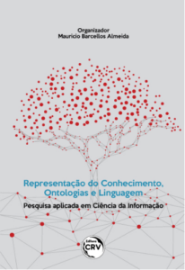

Informações
Bem vindo,
Nesse site você vai encontrar informações sobre minhas atividades de ensino e pesquisa.
Desenvolvo modelos que computadores usam para lidar com representações das coisas do mundo, aquelas coisas com as quais as pessoas convivem no seu dia a dia, como árvores, bactérias, carros, instituições, livros, loterias, governos, outras pessoas, suas profissões, para citar uns poucos exemplos. Esses modelos, denominados “ontologias”, fornecem esquemas aos computadores tornando-os capazes de suportar inferências lógicas, ou seja, raciocínio automático.
Pessoas têm facilidade em compreender significado em diferentes contextos, computadores não
As ontologias são representações formais e, portanto, precisas, das entidades do mundo e das relações entre elas. Essa é a abordagem da disciplina da Ontologia Aplicada, onde a ênfase recai na representação das coisas em si e não nas palavras usadas para descrever tais coisas. Por sua ênfase em representar coisas, ontologias são empregadas em todo o mundo para integração ou interoperabilidade entre sistemas de informação, em áreas vitais da sociedades como Medicina, Direito, Instituições, Cultura, dentre outras. Nesse sentido, o trabalho com ontologias proporciona um tipo de tradução entre humanos e máquinas.
- Para melhor entendimento, 4 minutos de leitura no Medium: “ Ontologia e ontologias “
Livros
-
Coleção
Representação do Conhecimento em Ciência da Informação.
Acesse todos os livros da coleção aqui
-
Coleção Ontologia na Prática.
Acesse todos os livros da coleção aqui
-
Livros organizados.
Acesse todos os livros da coleção aqui

ReCOL
(Publicado)
Formação e atuação
- Professor titular – UFMG
- Doutorado em Ciência da Informação
- Pós-doutorado – State University of New York
- Pós-doutorado – Faculdade de Medicina, UFMG
- Visiting Researcher Scholar – University of Arkansas for Medical Sciences
- Bolsista de Produtividade – Conselho Nacional de Pesquisa e Desenvolvimento (CNPQ)
- Professor Residente – Instituto de Estudos Avançados Transdisciplinares (UFMG)
- Especialista convidado – Programa EDUCA e-SUS APS
- Especialista convidado – Comitê de Cadastro Territorial da CONGEO (Governo Federal)
Interesses de pesquisa
Representação do Conhecimento
- Ontologia Aplicada (veja artigo)
- Vocabulários biomédicos (veja artigo)
- Vocabulários corporativos e legais (veja mapa mental)
Organização da Informação e do Conhecimento
- Informação e conhecimento nas organizações (veja artigo)
- Modelos para sistemas de Informação (veja pôster)
- Arquitetura da informação (veja apresentação)
Grupos de pesquisa
- Representação do Conhecimento, Ontologias e Linguagem (RECOL), Universidade Federal de MG (desde 2005, líder)
- Ontology Research Group (ORG), State University of New York at Buffalo (desde 2011)
- Data & Ontology, Instituto Tecnológico de Aeronáutica (ITA) (desde de 2024)
- Tecnologias para Construção de Observatórios, Instituto Brasileiro de Informação em Ciência e Tecnologia (desde fev.2026)
Parecerista de fomento a pesquisa
- Swiss National Science Foundation (SNSF)
- Coordenação de Aperfeiçoamento de Pessoal de Nível Superior (CAPES)
- Conselho Nacional de Desenvolvimento Científico e Tecnológico (CNPq)
Parecerista de periódicos
- Journal of the American Society for Information Science and Technology – US (desde dez.2014)
- Applied Ontology Journal – Italy (de jan.2018 à dez.2025)
- Knowledge Organization Journal – United States (desde dez.2014)
- Journal of Biomedical Semantic – United States (desde março.2024)
- Library Hi Tech Information – Taiwan (desde dez.2016)
- Information Research Journal – United States (desde jun.2016)
- Journal of Information Science – United Kingdom (desde nov.2015)
- Journal of the Brazilian Computer Society – Brasil (desde abril.2024)
- Athens Journal of Technology & Engineering – Greece (dez.2015 a dez.2018)
- Cognition, Technology & Work – Switzerland (desde dez.2023)
- Nature Anthropology – China (desde dez.2023)
- The Journal of Speech Sciences – Brasil (desde dez.2024)
Parecerista de eventos
- Formal Ontologies for Information Systems (FOIS) Conferences – (de jul.2014 à dez.2025)
- Brazilian Seminar of Research in Ontologies – Brazil (de jan.2011 a dez.2018)
- Enterprise Engineering Working Conference (EEWC) – Europe (desde nov.2013)
- International Society of Knowledge Representation (ISKO) – Brasil (desde abr.2025)
Editor de periódico científico
- Advances of Knowledge Representation (FKC), UFMG, Editor-In-Chief (desde 2020)
- Applied Ontology Journal, The International Association for Ontology and its Applications (IAOA), Editorial Board (2023/2024)
- Código 31: Rev. Eletr., FUMEC, Conselheiro científico (desde 2022)
Representações
- European Enterprise Engineering Institute (EEI)
-
The US National Center of Ontological Research (NCOR)
Acesse também NCOR-Brasil
Normalização
- CE-021:002.032 – Gestão e Intercâmbio de Dados (coordenador)
- CE-021:003.215 – Tecnologias da Inf. e Transf. Digital (membro)
Endereços e credenciais
- Escola de Ciência da Informação Universidade Federal de Minas Gerais (UFMG)
- Av. Antônio Carlos, 6627 – Campus Pampulha – CEP 31.270-901 Belo Horizonte – Minas Gerais – Brasil
- mba em eci.ufmg.br
-
Open Researcher and Contributor ID (ORCID):
https://orcid.org/0000-0002-4711-270X
lattes ♦ somos ufmg ♦ google scholar ♦ research gate ♦ linkedin ♦ dblp ♦ curriculum vitae